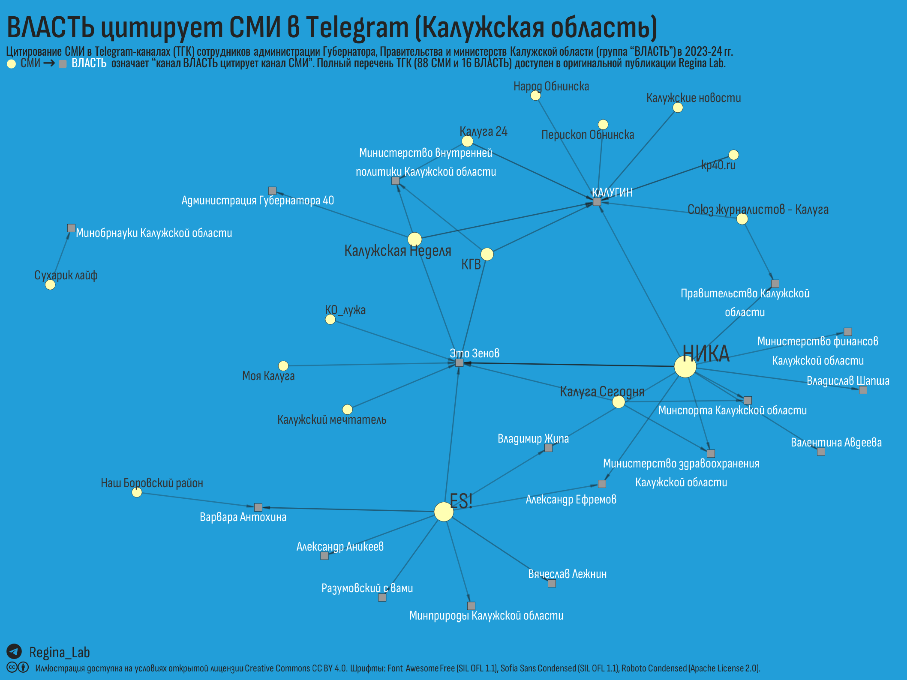
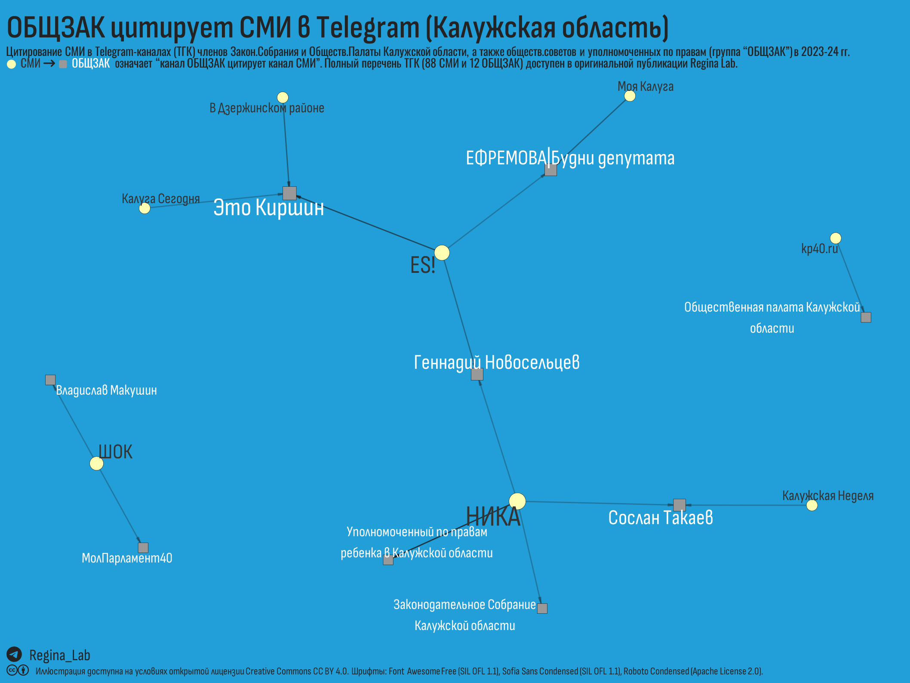
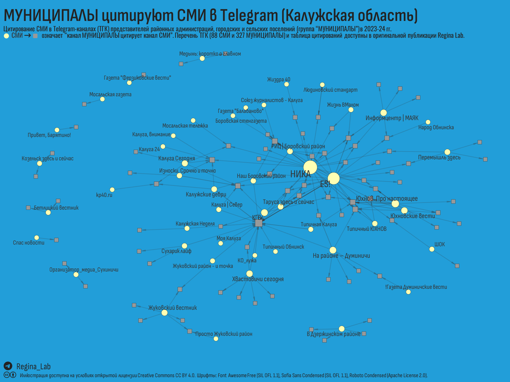
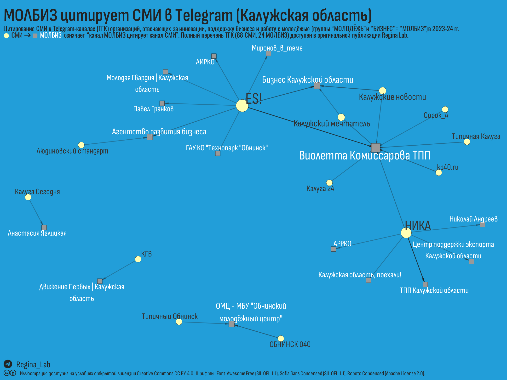

Анализ цитирования 88 калужских СМИ в ТГ-каналах региональной и муниципальной власти, органов общественного и государственного надзора, политических партий и институтов развития региона (всего - 418 каналов) в период с 2023.01 по 2024.03 г. На основе найденных репостов и прямых ссылок (всего - 9682 цитирования) для 53 каналов СМИ построен рейтинг.
Продолжаем наше исследование влиятельности Телеграм-каналов (далее – ТГК, канал, каналы) Калужской области и в этой части мы завершаем сравнение ТГК СМИ. Рейтинг, построенный на цитированиях СМИ друг друга (см. Часть 1. Царь горы), конечно, кое-что говорит об уважении со стороны коллег, но полноценное признание узнается по цитированиям в официальных каналах субъектов публичной власти и органов общественного надзора.
Попробуем взглянуть на калужские СМИ (Таблица 1) с этой стороны.
В группу ВЛАСТЬ мы включили 36 ТГК, которые ведут сотрудники Администрации Губернатора и Правительства Калужской области, руководители региональных министерств и некоторых подведомственных организаций. В таблице 2 перечислены ТГК из группы ВЛАСТЬ и их характеристики.
В таблице 3 для каждого из каналов группы ВЛАСТЬ приведен перечень процитированных ТГК группы СМИ с дополнительными метриками (см. пояснения в подписи).
Пример прочтения таблицы 3. В канале Варвары Антохиной мы обнаружили 11 цитирований 2-х ТГК группы СМИ – 10 цитирований (91%) канала “ES! - канал Евгения Серкина” и 1 цитирование (9%) канала “Наш Боровский район”. Для первого канала цитирования Варвары Антохиной составили 37% от всех цитирований в ТГК группы ВЛАСТЬ, а для второго канала это единственное упоминание (100%).
На иллюстрации показаны обнаруженные цитирования.

Строки отсортированы по убыванию N_цит_ТГК, но в интерактивной таблице выше, нажав на название столбца, можно пересортировать строки по значениям любого другого столбца.
Наблюдения:
ТГК группы ВЛАСТЬ слабо цитируют ТГК СМИ – из 88 ТГК СМИ, включенных в исследование, цитировались лишь 16.
по совокупности показателей можно говорить о лидерстве канала “Ника”, за которым следует “ES! - канал Евгения Серкина” (оба имеют самое высокое по группе значение индекса Хирша).
В группу ОБЩЗАК были отнесены 13 ТГК, которые ведут представители Законодательного собрания КО, Общественной палаты КО, общественных советов, а также уполномоченные по правам. Если взаимоотношения СМИ с представителями группы ВЛАСТЬ регулируются федеральными законами, в том числе антимонопольного характера, то “общественники” при выборе, какое СМИ процитировать, на наш взгляд, могут руководствоваться личными симпатиями, сложившимися отношениями или рекомендациями со стороны. Это наше оценочное суждение, возможно, для некоторых организаций взаимодействие с СМИ регулируется положениями устава или внутренними нормативными документами.
В таблице 5 перечислены ТГК из группы ОБЩЗАК и выборочные характеристики содержащихся в них постов.
В таблице 6 для каждого из каналов группы ОБЩЗАК показан перечень процитированных ТГК группы СМИ с дополнительными метриками (см. пояснения в подписи).
Пример прочтения таблицы 6. В канале ЕФРЕМОВА|Будни депутата мы обнаружили 4 цитирования 2-х ТГК группы СМИ – 3 цитирования (75%) канала “Моя Калуга” и 1 цитирование (25%) “ES! - канал Евгения Серкина”. Для ТГ-канала “Моя Калуга” цитирования в канале “ЕФРЕМОВА|Будни депутата” составляют 100% от всех цитирований в ТГК группы “ОБЩЗАК”, а для канала Евгения Серкина - 12%.
На иллюстрации наглядно видны сложившиеся отношения.

Строки отсортированы по убыванию N_цит_ТГК, но в интерактивной таблице выше, нажав на название столбца, можно пересортировать строки по значениям любого другого столбца.
Наблюдения:
ТГК группы ОБЩЗАК еще слабее цитируют СМИ, чем ТГК группы ВЛАСТЬ – из 88 СМИ каналов цитировались лишь 8.
наибольшее количество цитирующих каналов ОБЩЗАК также у каналов “Ника” и “ES! - канал Евгения Серкина”.
обращает на себя внимание видимость обнинского школьного СМИ (канал “ШОК”).
В группу МУНИЦИПАЛЫ отнесены 327 ТГК, которые ведут представители администраций районов, городских и сельских поселений. В таблице 8 перечислены ТГК группы МУНИЦИПАЛЫ и характеристики содержащихся в них постов.
В таблице 9 для каждого из каналов группы МУНИЦИПАЛЫ показан перечень процитированных ТГК группы СМИ с дополнительными метриками (см. пояснения в подписи).
Пример прочтения таблицы 9. В канале “Это Голубев” мы видим 13 цитирований 3-х ТГК группы СМИ – 6 цитирований (46%) канала “ES! - канал Евгения Серкина”, 5 (38%) – “НИКА” и 2 (15%) – “Таруса здесь и сейчас”. Для указанных 3 СМИ цитирования в канале “Это Голубев” составляют 2%, 2% и 5%, соответственно.
На иллюстрации показана только структура отношений, названия МУНИЦИПАЛОВ не приведены из-за пространственных ограничений иллюстрации, но все цитирования можно найти в таблице 9, используя поле для поиска.

Строки отсортированы по убыванию N_цит_ТГК5, но в интерактивной таблице выше, нажав на название столбца, можно пересортировать строки по значениям любого другого столбца.
Наблюдения:
по количеству ТГК из группы МУНИЦИПАЛОВ, активно цитирующих СМИ (метрика N_цит_ТГК5), лидеры не изменились – “Ника”, а за ней “ES! - канал Евгения Серкина”.
ТГК группы МУНИЦИПАЛЫ более активны в цитировании СМИ – из 88 СМИ каналов цитировались 48. Лояльность и внимание муниципальных администраций к “своим” районным СМИ ожидаемо высока – следом за лидерами идут “Юхнов. Про настоящее”, “Хвастовичи сегодня”, “На районе – Думиничи”, “Юхновские вести”, “Таруса здесь и сейчас”, “Жуковский вестник” и др.
каналы, которые позволяют открыто критиковать действия региональных властей (КО_лужа, Сорок_А, Калужский мечтатель), никто из МУНИЦИПАЛОВ цитировать не рискнул.
Между ТГК из групп МОЛОДЁЖЬ и БИЗНЕС немало общего – авторы каналов реализуют направления госполитики, которые никогда не выпадают из фокуса (это вам не “углеродные полигоны”). По этой причине, и молодёжку, и предпринимателей ведут опытные организаторы побед, умеющие и продукт упаковать, и гранты получить, и на фотографии с лидером выглядеть сообразно статусу. Мы предположили, что и с журналистами эти группы ведут себя схожим образом. Куда им без СМИ? Значит, как-то должны налаживать отношения.
В группу МОЛБИЗ были отнесены 24 ТГК (Таблица 11).
В таблице 12 для каждого из каналов групп БИЗНЕС и МОЛОДЁЖЬ показан перечень процитированных ТГК группы СМИ с дополнительными метриками (см. пояснения в подписи).
Пример прочтения таблицы 12. В канале “Агентство развития бизнеса” мы видим 4 цитирования 2-х ТГК группы СМИ – 3 цитирования (75%) канала “ES! - канал Евгения Серкина” и 1 (25%) – “Людиновский стандарт”. Для “ES! - канал Евгения Серкина” цитированя в канале “Агентство развития бизнеса” составляют 9% от всех цитирований в ТГК группы МОЛБИЗ, а у канала Людиновский стандарт - это единственное цитирование (100%).
На иллюстрации показана структура сети и цитирования.

Строки отсортированы по убыванию N_цит_ТГК5, но в интерактивной таблице выше, нажав на название столбца, можно пересортировать строки по значениям любого другого столбца.
Наблюдения:
ТГК, отнесенные к группам БИЗНЕС и МОЛОДЁЖЬ, неожиданно слабо цитируют СМИ
в лидерах те же 2 канала, что и в предыдущих рейтингах, с одним отличием – “НИКА” уступила первенство.
Мы не стали отдельно рассматривать редкие цитирования СМИ в ТГК-групп ИДЕОЛОГИЯ, НАДЗОР и СТОЛИЦА (условно – ИНС), приведем их в отдельной таблице.
Вот мы и добрались до финального рейтинга, который построим на основании цитирований СМИ в ТГК всех рассмотренных выше групп. Это означает, что мы будем учитывать все цитирования каналов СМИ, кроме тех, где СМИ цитируют друг друга или себя любимых.
Какая метрика лучше для оценки? - индекс Хирша (h), количество цитирующих каналов (N_цит_ТГК), количество ТГК, которые процитировали не менее 5 раз (N_цит_ТГК) или общее число цитирований (Сумма и Сумма2)?
Мы склоняемся к варианту с ранжированием в следующем порядке:
по убыванию индекса Хирша (этот показатель отражает количество “устойчиво цитирующих” ТГК, ограничивая влияние накруток через “близкие каналы” и “одноразовых” цитирований). Если у канала h = 5, значит есть 5 ТГК, которые цитировали рассматриваемый канал не менее 5 раз. Для того, чтобы увеличить значение индекса Хирша (h) до 7, недостаточно начать теплее дружить с имеющимися пятью, надо чтобы появилось 7 каналов и от каждого минимум по 7 цитирований.
по убыванию количества ТГК, которые процитировали минимум 5 раз
по убыванию количества ТГК, которые процитировали хотя бы 1 раз
по убыванию количества цитирований, суммированного с удельным весом ссылок
🥁 🥁 🥁 🥁 🥁
Вывод о том, кто Царь Горы среди калужских СМИ, читатель без труда сделает самостоятельно!
Нам прах земной взамен бумаги будет,
В него слезами впишем нашу скорбь.
В таблице 16 приводим перечень ТГК СМИ, которых ни разу не цитировали в ТГК 8 рассмотренных выше групп.
🧐 Усиление вертикальных структур управления приводит к деградации отношений между публичной властью и СМИ. Зачем обращать внимание на районные СМИ, когда всё доложит пресс-служба? Стоит ли цитировать местных журналистов, когда твою повестку согласуют кураторы? В таких условиях неибежно возрастает риск деградации отдельных СМИ с превращением в поставщика услуг.
🧐 Было бы направильно переложить всю ответственность на осторожность “класса представителей”. Региональные СМИ довольно разнообразны в своём понимании того, что такое “профессиональные стандарты”. Конечно, не всякий руководитель или политик захочет цитировать канал, владелец которого периодически путает кнопку “Опубликовать” с кнопкой смыва. Увы, не редкость.
Нравятся наши материалы? 👉 ТГ-канал Regina Lab
Telegram Калужской области. Часть 2. Кто цитирует СМИ? // Блог Regina Lab. - 2024. - URL: https://reginaobninsklab.github.io/posts/kaluga-tg-citations-smi-rank/. - Дата публикации: 15 апреля 2024 г.
Если не указано иное, то статья целиком и составляющие её текст, иллюстрации и данные могут использоваться на условиях публичной лицензии Creative Commons CC BY 4.0 Deed Attribution 4.0 International.
См. соответствующий раздел на странице “О проекте”.
Allaire J, Xie Y, Dervieux C, McPherson J, Luraschi J, Ushey K, Atkins A, Wickham H, Cheng J, Chang W, Iannone R (2023). rmarkdown: Dynamic Documents for R. R package version 2.22, https://github.com/rstudio/rmarkdown.
Ooms J (2023). magick: Advanced Graphics and Image-Processing in R. R package version 2.8.2, https://CRAN.R-project.org/package=magick.
Pedersen T (2024). patchwork: The Composer of Plots. R package version 1.2.0, https://CRAN.R-project.org/package=patchwork.
Qiu Y, details. aotifSfAf (2022). sysfonts: Loading Fonts into R. R package version 0.8.8, https://CRAN.R-project.org/package=sysfonts.
Qiu Y, details. aotisSfAf (2023). showtext: Using Fonts More Easily in R Graphs. R package version 0.9-6, https://CRAN.R-project.org/package=showtext.
Wickham H (2022). stringr: Simple, Consistent Wrappers for Common String Operations. R package version 1.5.0, https://CRAN.R-project.org/package=stringr.
Wickham H (2016). ggplot2: Elegant Graphics for Data Analysis. Springer-Verlag New York. ISBN 978-3-319-24277-4, https://ggplot2.tidyverse.org.
Wickham H, François R, Henry L, Müller K, Vaughan D (2023). dplyr: A Grammar of Data Manipulation. R package version 1.1.2, https://CRAN.R-project.org/package=dplyr.
Wickham H, Henry L (2023). purrr: Functional Programming Tools. R package version 1.0.1, https://CRAN.R-project.org/package=purrr.
Wickham H, Hester J, Bryan J (2023). readr: Read Rectangular Text Data. R package version 2.1.4, https://CRAN.R-project.org/package=readr.
Wickham H, Seidel D (2022). scales: Scale Functions for Visualization. R package version 1.2.1, https://CRAN.R-project.org/package=scales.
Wickham H, Vaughan D, Girlich M (2023). tidyr: Tidy Messy Data. R package version 1.3.0, https://CRAN.R-project.org/package=tidyr.
Wilke C, Wiernik B (2022). ggtext: Improved Text Rendering Support for ‘ggplot2’. R package version 0.1.2, https://CRAN.R-project.org/package=ggtext.
Xie Y (2023). knitr: A General-Purpose Package for Dynamic Report Generation in R. R package version 1.43, https://yihui.org/knitr/.
Xie Y (2015). Dynamic Documents with R and knitr, 2nd edition. Chapman and Hall/CRC, Boca Raton, Florida. ISBN 978-1498716963, https://yihui.org/knitr/.
Xie Y (2014). “knitr: A Comprehensive Tool for Reproducible Research in R.” In Stodden V, Leisch F, Peng RD (eds.), Implementing Reproducible Computational Research. Chapman and Hall/CRC. ISBN 978-1466561595.
Xie Y, Allaire J, Grolemund G (2018). R Markdown: The Definitive Guide. Chapman and Hall/CRC, Boca Raton, Florida. ISBN 9781138359338, https://bookdown.org/yihui/rmarkdown.
Xie Y, Dervieux C, Riederer E (2020). R Markdown Cookbook. Chapman and Hall/CRC, Boca Raton, Florida. ISBN 9780367563837, https://bookdown.org/yihui/rmarkdown-cookbook.
Yu G (2023). ggimage: Use Image in ‘ggplot2’. R package version 0.3.3, https://CRAN.R-project.org/package=ggimage.